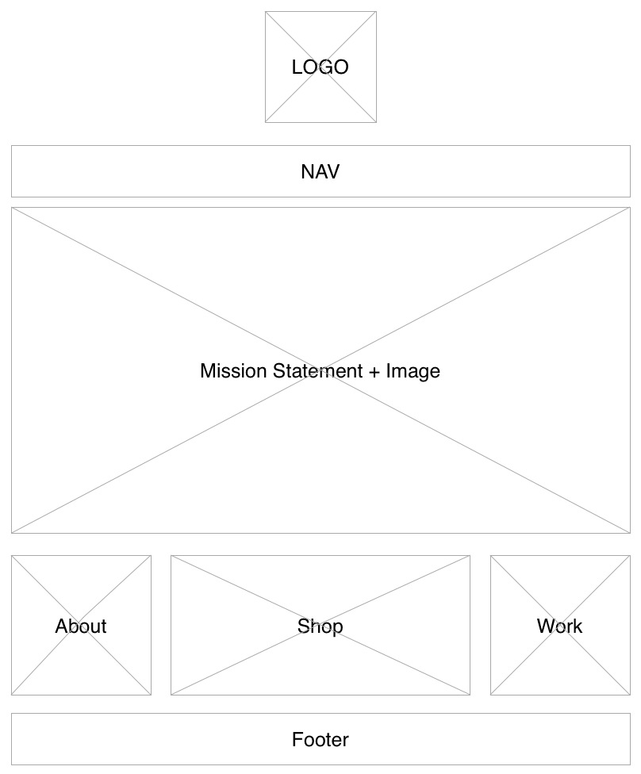
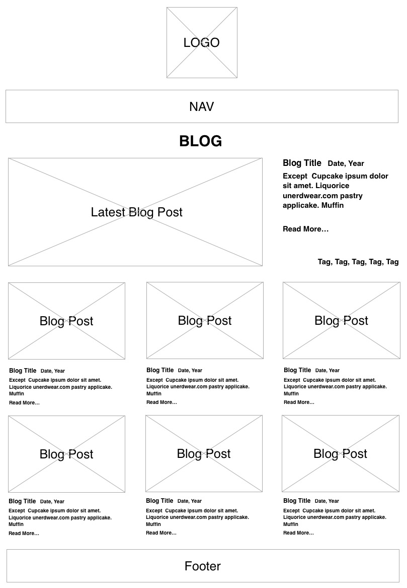
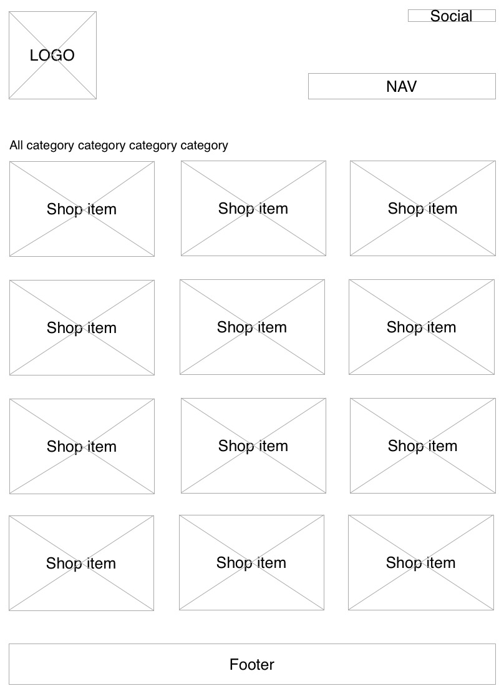
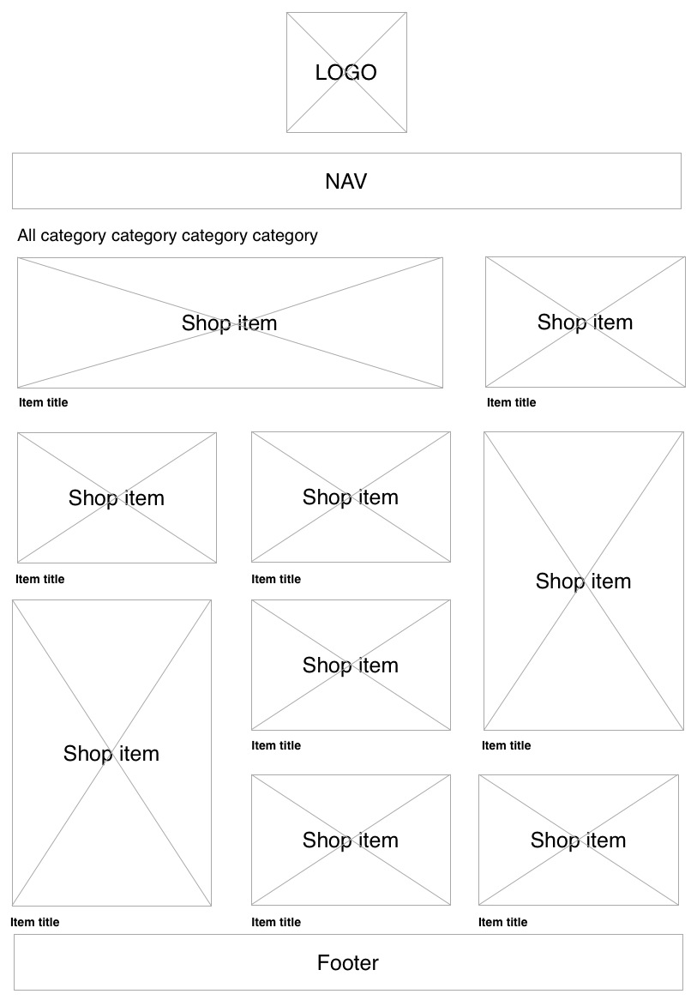

Which two websites are you most inspired by?
How do they exhibit effective use of space, size or balance?
www.perkybros.com
- Space: Quite a bit of negativeThe white negative space frames the project images which frames the logo.
- Size: The Name of the company is the focal point, even bigger than the logo on the top left.
- Balance: Large project images are balanced with Large logo name.
www.theline.com
- space: Not a lot of negative space for the overall site.
- Size:The title on the hero image is the largest text on the home page, even bigger then the logo. All text, including logo, nav, footer are small. The hero image is the largest object on the page which encourages user to focus on the latest blog post of the site. (LOVE the Line as design feature)
- Balance: Large feature image is paired with large text, smaller images are paired with smaller text.
What makes them similar and different?
The nav locations for the two sites are both on the top. The call to action of the two site's index pages are different. Perkybros is showcasing their brand, while The Line is asking users to check out their latest blog post.
Thumbnail sketches
-
index-1

- Focal point: The latest blog post.
- Hierarchy: Latest Blog Post > Feature Shop Items > About > Work
- balance: Symmetical balace, a large image on left balanced by four small images on the right.
-
index-2

- Focal point: Mission statement.
- Hierarchy: Mission Statemetn > Shop > About > Work
- Balance:Center symmetical balance.
-
blog-1

- Focal point: Latest blog post.
- Hierarchy: Page heading > Featured image of each blog post > Blog title > Except
- Balance:Symmetical balance. Large image balance by lare amount of text.
-
blog-2

- Focal point: Latest blog post
- Hierarchy: Page Heading > Latest Blog Post > Other Blog Posts
- Balance: symmetical balance.
-
shop-1

- Focal point: The variety of items.
- Hierarchy: Shop items > catagory
- Balance: Symmetical balace and evenly spaced.
-
shop-2

- Focal point: Shop items with larger photos.
- Hierarchy: Featured Shop items > Shop items > Item titles > Category
- Balance: Asymmetrical Balance.